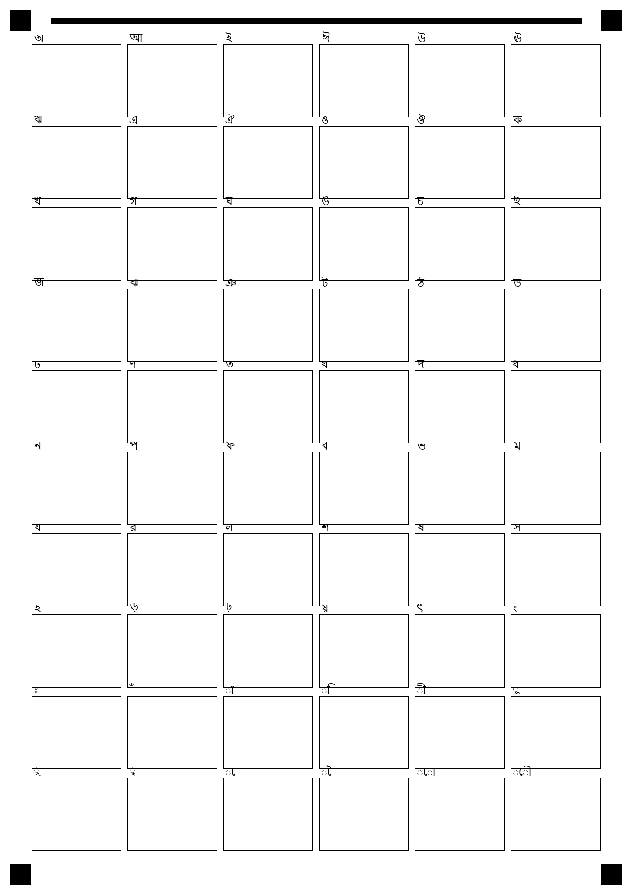
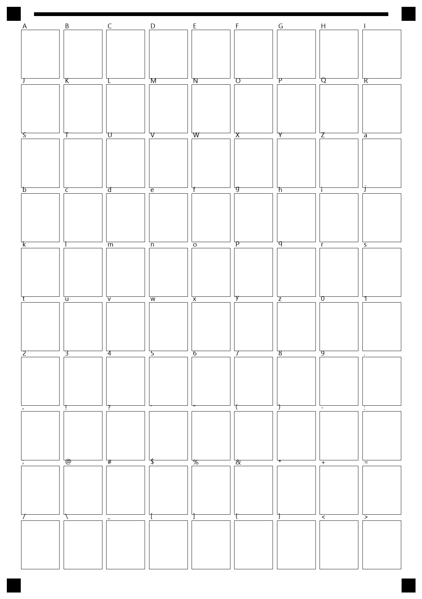
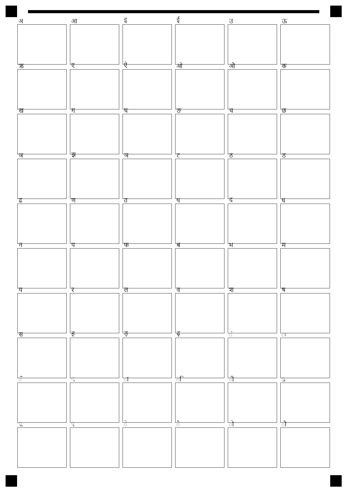

Turn your real handwriting into an ownable, installable font.
"Named after the traditional slate ritual — drawing your very first letter in hand."
Western tools ignore Indic complexities. Hatekhori unites clean Latin letterforms with the sacred geometry of Bengali and Hindi scripts.



Snap a photo. Our deterministic contour engine extracts authentic human strokes, fits Bézier curves, and compiles an installable .otf font in seconds.
An editorial type tester, optical scale waterfall, and character matrix with Unicode codepoint inspection.
Your handwriting belongs exclusively to you. Uploaded sheets are never used to train machine learning models.
True installable font file. Use in Word, Photoshop, Figma, or your website with one-line CSS.
No accounts, no email gates, no paywalls, no monthly subscriptions. Free under the MIT license.